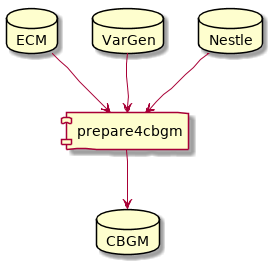
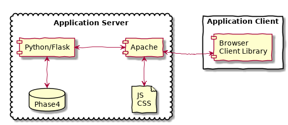

Introduction¶
A program suite for doing CBGM.
The CBGM is a method for inferring global manuscript stemmata from local stemmata in the manuscripts’ texts.
![strict digraph G {
graph [bb="0,0,220,175",
fontname="LiberationSans-Regular",
fontsize=10.5,
nodesep=0.2,
ordering=out,
rankdir=TB,
ranksep=0.4,
remincross=true,
size=11.85
];
node [height=0.3,
label="\N",
margin=0.005,
shape=ellipse,
width=0.3
];
edge [arrowhead=normal,
arrowtail=none,
labelangle=-15.0,
labeldistance=2.0
];
"*" [clique=0,
droptarget=1,
height=0.30556,
label="*",
labez="*",
labez_clique="*",
pos="47,164",
width=0.30556];
a [clique=1,
draggable=1,
droptarget=1,
height=0.30556,
label=a,
labez=a,
labez_clique=a,
pos="47,113",
width=0.30556];
"*" -> a [pos="e,47,124.04 47,152.61 47,147.21 47,140.42 47,134.05"];
"?" [clique=0,
droptarget=1,
height=0.30556,
label="?",
labez="?",
labez_clique="?",
pos="173,164",
width=0.30556];
a2 [clique=2,
draggable=1,
droptarget=1,
height=0.30556,
label=a2,
labez=a,
labez_clique=a2,
pos="137,113",
width=0.30556];
"?" -> a2 [pos="e,143.2,122.44 166.73,154.46 161.93,147.93 155.16,138.71 149.29,130.72"];
c3 [clique=3,
draggable=1,
droptarget=1,
height=0.30556,
label=c3,
labez=c,
labez_clique=c3,
pos="173,113",
width=0.30556];
"?" -> c3 [pos="e,173,124.04 173,152.61 173,147.21 173,140.42 173,134.05"];
d3 [clique=3,
draggable=1,
droptarget=1,
height=0.30556,
label=d3,
labez=d,
labez_clique=d3,
pos="209,113",
width=0.30556];
"?" -> d3 [pos="e,202.8,122.44 179.27,154.46 184.07,147.93 190.84,138.71 196.71,130.72"];
b [clique=1,
draggable=1,
droptarget=1,
height=0.30556,
label=b,
labez=b,
labez_clique=b,
pos="11,62",
width=0.30556];
a -> b [pos="e,17.199,71.437 40.729,103.46 35.928,96.93 29.156,87.712 23.287,79.725"];
c [clique=1,
draggable=1,
droptarget=1,
height=0.30556,
label=c,
labez=c,
labez_clique=c,
pos="47,62",
width=0.30556];
a -> c [pos="e,47,73.042 47,101.61 47,96.209 47,89.424 47,83.053"];
d [clique=1,
draggable=1,
droptarget=1,
height=0.30556,
label=d,
labez=d,
labez_clique=d,
pos="83,62",
width=0.30556];
a -> d [pos="e,76.801,71.437 53.271,103.46 58.072,96.93 64.844,87.712 70.713,79.725"];
c2 [clique=2,
draggable=1,
droptarget=1,
height=0.30556,
label=c2,
labez=c,
labez_clique=c2,
pos="119,62",
width=0.30556];
a2 -> c2 [pos="e,122.58,72.754 133.53,102.55 131.42,96.797 128.64,89.233 126.08,82.263"];
d2 [clique=2,
draggable=1,
droptarget=1,
height=0.30556,
label=d2,
labez=d,
labez_clique=d2,
pos="155,62",
width=0.30556];
a2 -> d2 [pos="e,151.42,72.754 140.47,102.55 142.58,96.797 145.36,89.233 147.92,82.263"];
e [clique=1,
draggable=1,
droptarget=1,
height=0.30556,
label=e,
labez=e,
labez_clique=e,
pos="47,11",
width=0.30556];
c -> e [pos="e,47,22.042 47,50.608 47,45.209 47,38.424 47,32.053"];
f [clique=1,
draggable=1,
droptarget=1,
height=0.30556,
label=f,
labez=f,
labez_clique=f,
pos="83,11",
width=0.30556];
d -> f [pos="e,83,22.042 83,50.608 83,45.209 83,38.424 83,32.053"];
}](_images/graphviz-302a8c1aaf18d8c5ca12b731efdc328331cd6bc3.png)
An example of a local stemma¶
In the CBGM we assume that a manuscript is prior to another manuscript if it contains a greater percentage of prior readings than posterior readings. Then we build a global stemma of manuscripts by using the most similar prior manuscripts as the parent manuscript.
The program suite consists of scripts for setting up the CBGM database and an application server for interactive graphic interrogation of the CBGM database.
Database preparation¶
The preparation step copies and normalizes the input data and computes the affinity matrix.
The input are 3 MySQL databases. The ECM database contains an apparatus and the VarGen database records editorial decisions about the priority of readings. The Nestle database contains the “Leitzeile”.
The output is one Postgres database. It contains all necessary data for the CBGM.

Database Preparation¶
Online Application¶
A Javascript library calls an application server and displays the results graphically.

Online Application¶
The application is online at: http://ntg.cceh.uni-koeln.de
The source code is online at: https://github.com/cceh/ntg
Author: Marcello Perathoner <marcello.perathoner@uni-koeln.de>